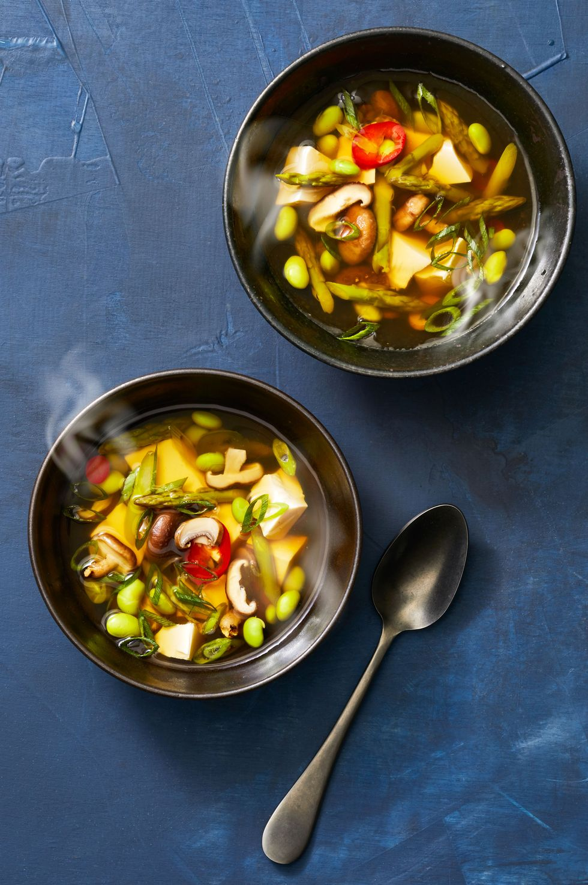

Gingery Spring Soup

Description
Get double the plant-based protein with shelled edamame and silken tofu (the best kind for soaking up all that savory broth).
Sliced ginger and jalapeño provide this plant-based soup with a pleasant, invigorating kick. Asparagus, mushrooms, edamame and silken tofu help bulk up the soup, but for more staying power, add brown rice ramen noodles to the pot during the last few minutes of cooking.
Ingredients
- 1 1/2 tbsp.vegetable bouillon base (we used Better than Bouillon)
- 3 callions, thinly sliced (dark greens separated from whites and light greens)
- 1 1-inch piece ginger, peeled and thinly sliced
- 1/2 jalapeño, thinly sliced
- 8 oz.asparagus, cut into 1-inch pieces
- 8 oz.cremini mushrooms, thinly sliced
- 4 oz.baby shiitake mushrooms, halved or sliced if large
- 4 oz.frozen shelled edamame, thawed
- 12 oz.extra firm silken tofu, broken into pieces
Steps
- In large pot, whisk together 1 cup water with bouillon base to combine, then stir in 6 additional cups water along with scallion whites and light greens, ginger, jalapeño and bring to a simmer.
- Add asparagus, mushrooms, and edamame and simmer until vegetables are barely tender, 3 to 4 minutes. Divide tofu among bowls and spoon soup and vegetables on top, then sprinkle with dark scallion greens.